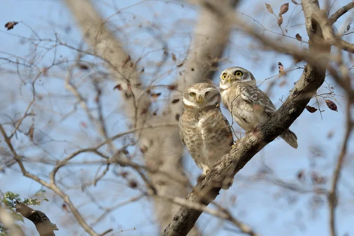

Mochuelos
Mochuelo es el nombre común de varias aves rapaces nocturnas (orden Strigiformes) de la familia Strigidae. También es el nombre de algunos pájaros (aves del orden Passeriformes).

El mochuelo común es un búho pequeño;
apenas levanta 22 cm, con una envergadura
alar de unos 50 cm. Su aspecto es redondeado,
más bien rechoncho y con la cabeza ancha.
Su plumaje es principalmente pardo-grisáceo,
sobre el que destacan sus ojos amarillos.
El área de distribución del mochuelo europeo llega
por el norte hasta el centro de Gran Bretaña;
es decir, desde el desierto hasta la linde de la
zona nórdica del bosque de coníferas. Por el este
llega hasta Manchuria. Es abundante en toda esta zona.
En la Península Ibérica es habitual en el litoral
mediterráneo.
Muchos dicen que el mochuelo es el ave rapaz
nocturna más cordial del reino animal.
Esta considerada una especie muy activa
en la oscuridad pero que, a su vez, se
deja ver a la luz del sol merodeando por
los árboles. Es curioso ver volar al mochuelo.
En función del momento del día lo hace de una
manera u otra: por el día tiende a realizar
movimientos ondulantes y por la noche, vuela
en línea recta.
Al contrario que otras especies de aves,
el mochuelo no necesita materiales
específicos para construir su nido
sino que cualquier grieta o agujero
les vale para nidificar. Las hembras
suelen poner entre 2 y 5 huevos que
incubará en un periodo de 28 días
aproximadamente.
Una de las curiosidades de esta especie es que para
la diosa griega Atenea, el mochuelo era un animal
sagrado que le acompañaba siempre allá donde fuera.
Es por ello que su nombre científico procede de esta
diosa griega. Además, el mochuelo representa el
símbolo de la ciudad de Atenas.
Entradas Sugeridas:
Búhos